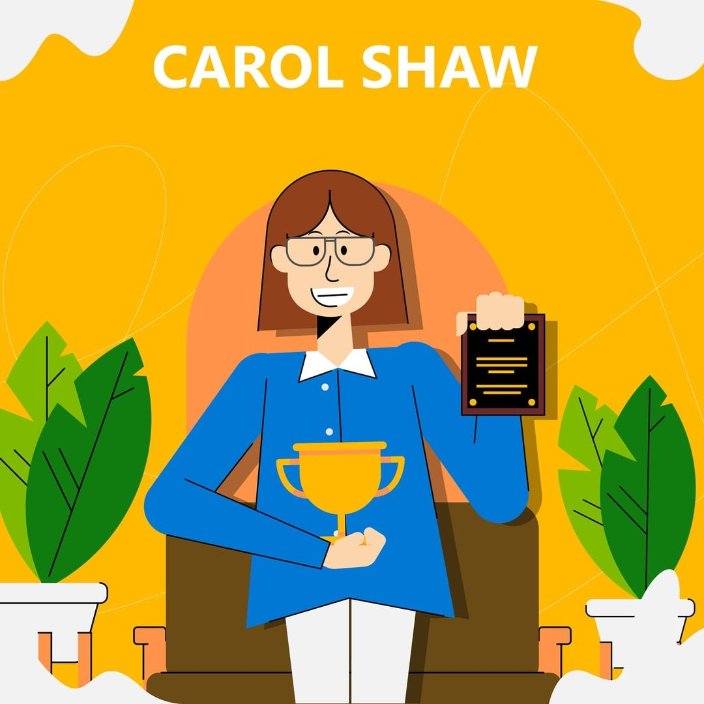
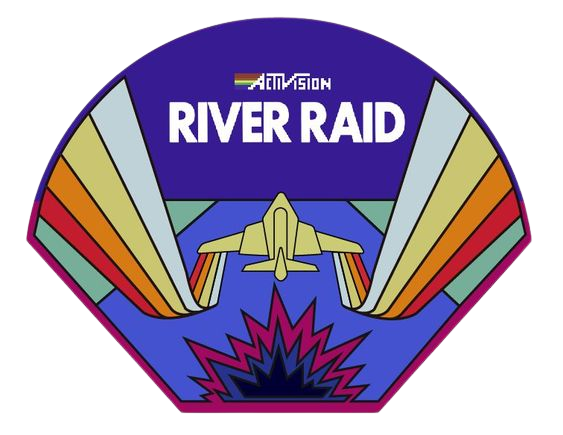
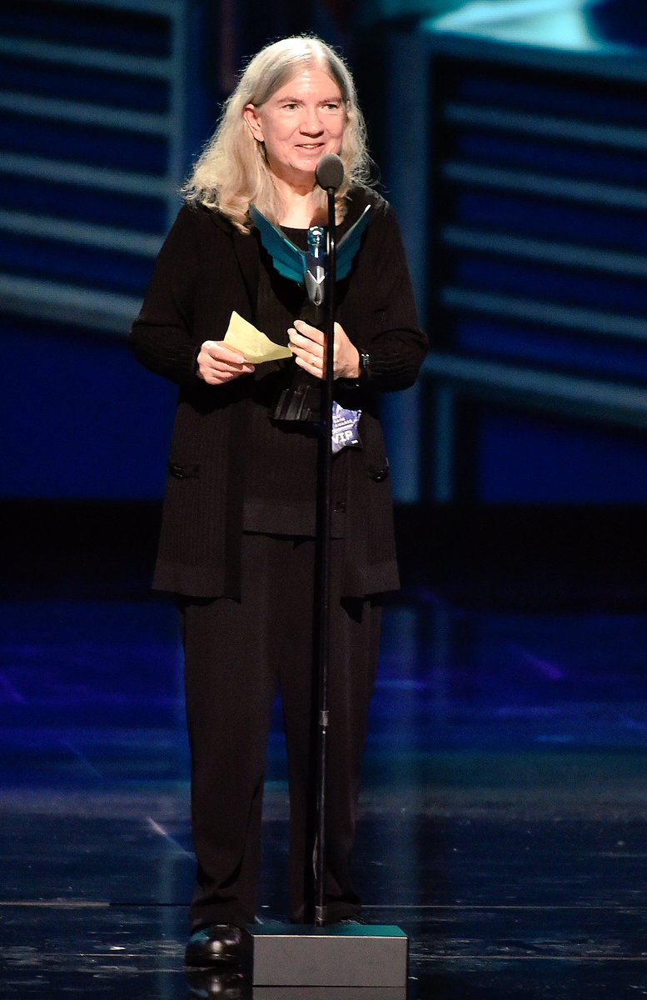

Nascida na Califórnia (Estados Unidos) em 1955, Shaw sempre esteve na região do Vale do Silício e, naturalmente, foi influenciada pela revolução tecnológica que ali aconteceu. Seu pai era um engenheiro mecânico que trabalhava no Stanford Linear Accelerator Center (um laboratório que trabalhava com projetos energéticos para o governo), e Carol começou a se interessar pelo universo dos computadores enquanto estava no ensino médio, quando usou um computador pela primeira vez e descobriu que podia jogar games baseados em texto no sistema BASIC.
|  |
Seu interesse pelos videogames começou cedo, quando a jovem Carol costumava frequentar o minigolfe de sua região, onde havia uma sala com jogos de arcades. Ela gostava especialmente do game Computer Space, considerado o primeiro fliperama da história. Então, Shaw entrou na Universidade da Califórnia e graduou-se em engenharia elétrica e também em ciência da computação em 1977, conquistando um mestrado no segundo curso em Berkeley. E a evolução profissional de Shaw foi rápida: já em 1978 tornou-se a primeira mulher a desenvolver um jogo eletrônico em toda a história.
Depois de passar rapidamente pela Tandem Computers, Shaw foi contratada como engenheira de softwares pela Atari logo que se formou na universidade, foi lá que Carol Shaw desenvolveu seus dois primeiros jogos (Polo e 3-D Tic-Tac-Toe, ambos para o Atari 2600). Saindo da companhia que se tornou o símbolo da revolução dos videogames no mundo, Shaw foi trabalhar na Activision, que, na época, fabricava cartuchos para o Atari 2600. Lá, a desenvolvedora programou seu game de maior sucesso – River Raid –, considerado um clássico e um dos jogos mais populares de sua época.
|  |
River Raid permitia até dois jogadores em turnos alternados para controlar um avião que sobrevoa um rio, mas, diferentemente dos jogos de tiro lançados até então, em que todo o jogo se passava em uma tela fixa, em River Raid o avião movia-se verticalmente ao longo do rio e combatia inimigos como navios, helicópteros e aviões rivais. Com nível de dificuldade progressivo, o próprio jogador regulava a velocidade do voo, e outra inovação deste jogo foi a introdução de um tanque de combustível limitado, que obrigava o jogador a reabastecer a aeronave nos postos espalhados pelo rio. Ou seja, o jogador precisava se atentar não somente aos inimigos iminentes, como também ao estoque de combustível e planejar suas jogadas para que desse tempo de chegar ao próximo ponto de abastecimento. Apesar de ainda ser desconhecido algum jogador que tenha chegado ao final de River Raid, alguns sites demonstram um suposto final verdadeiro do jogo.
Em 1984, Shaw saiu da Activision após completar o design do jogo Happy Trails, e outros de seus créditos como desenvolvedora ou designer de games ficam com os jogos Video Checkers (1978), Othello e Super Breakout (também de 1978). Além destes, ela também foi responsável por adaptar jogos para o console 8-bit da Atari, em 1979. Então Carol voltou a trabalhar na Tandem, onde permaneceu até 1990 – ano de sua aposentadoria antecipada. Nessa companhia, a desenvolvedora deixou de lado sua expertise com games para atuar mais como cientista da computação, trabalhando com programação na linguagem Assembly.
Aposentada antes de chegar à terceira idade graças ao imenso sucesso de River Raid, Carol Shaw passou a realizar trabalhos voluntários em organizações relacionadas à tecnologia. Uma dessas organizações por onde passou como voluntária foi o Foresight Institute, uma organização não governamental que visa promover tecnologias com potencial para transformar o mundo, como, por exemplo, a nanotecnologia molecular. Na ONG, Carol atuou como CIO cuidando da manutenção de computadores Macintosh e também de um servidor Windows NT, permanecendo no trabalho voluntário até 2001.
|  |
Carol Shaw se aposentou precocemente, mas ao deixar os games de lado, se dedicou a trabalhos voluntários em organizações relacionadas com tecnologia.No ano passado ela recebeu o prêmio de Ícone da Industria, dado pela The Game Awards, graças ao seu imenso trabalho e legado deixado no desenvolvimento de jogos.
Atualmente, Carol Shaw vive uma vida tranquila na Califórnia com seu marido Ralph Merkle, um cientista e pesquisador na área de nanotecnologia com quem se casou em 1983.
| Ano | Feitos | |
|---|---|---|
| (Atari, 1978) | 3D Tic-Tac-Toe | |
| (Atari, 1978) | Polo unreleased | |
| (Atari, 1978) | Super Breakout, com Nick Turner | |
| (Atari, 1978) | Video Checkers | |
| (Atari, 1978) | Othello,com Ed Logg |